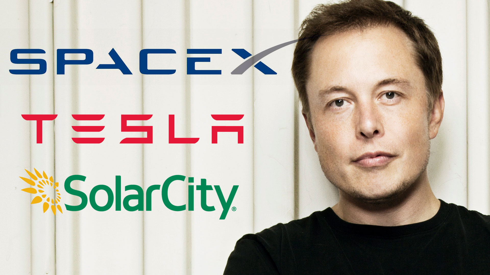
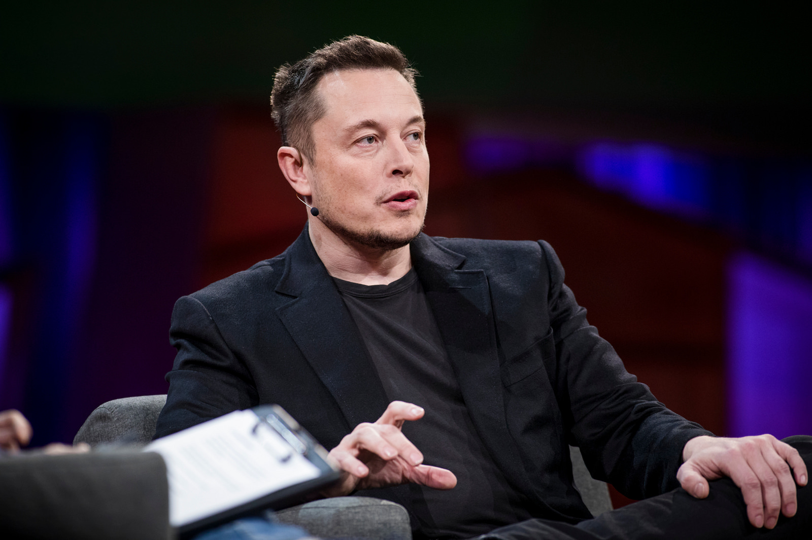
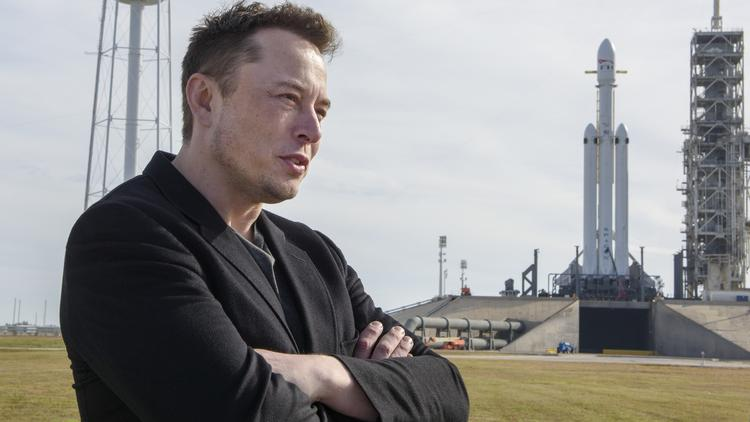
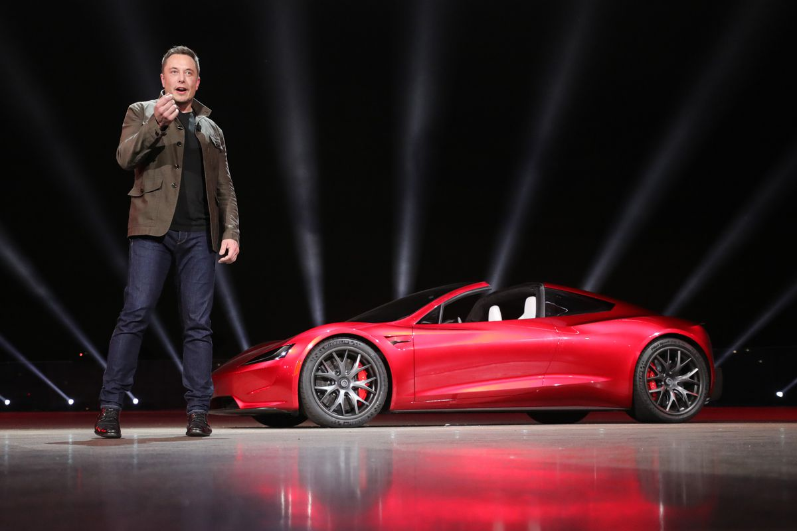
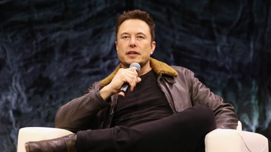
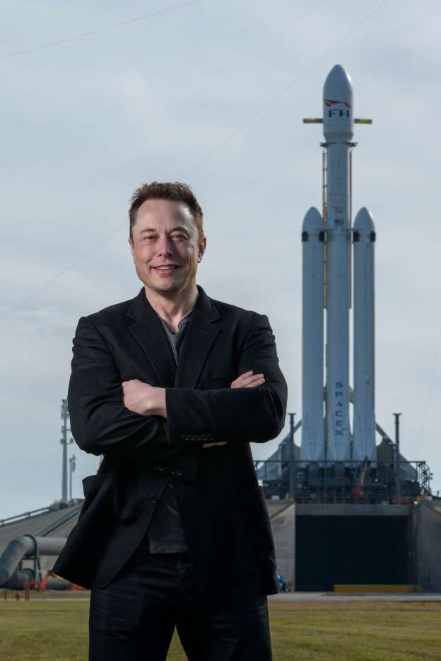

Ілон Рів Маск (англ. Elon Reeve Musk); нар.28 червня 1971, Преторія, ПАР) — інженер, підприємець, винахідник, інвестор, мільярдер. Засновник компаній SpaceX, PayPal, Neuralink і The Boring Company (PayPal продали 2002 року за 1,5 млрд доларів;
позаяк Маск був співвласником компанії, після оплати всіх податків він отримав близько 180 млн доларів). Домігся значних успіхів у сфері інформаційних технологій, ракетобудування та автомобілебудування. Засновник, власник, генеральний директор
і головний інженер SpaceX; головний дизайнер (Chief Product Architect), генеральний директор і голова ради директорів Tesla Inc. Засновник, власник і генеральний директор Neuralink і The Boring Company. Входить до ради директорів компанії
SolarCity, заснованої його двоюрідними братами.
23 серпня 2017 р. статки Ілона Маска сягнули $20,7 млрд. Посів 12-ту сходинку в топ-100 найбагатших IT-підприємців за версією Forbes.

Маск народився і виріс у Преторії (ПАР). Його мати була дієтологом, батько мав свій інженерний бізнес. Свій перший комп'ютер Ілон купив у віці десять років і самостійно навчився на ньому програмувати. Коли йому було дванадцять, він продав свою
першу програму — гру під назвою Blastar, за 500 доларів. У сімнадцятирічному віці він виїхав до Канади, а в 1992 переїхав до США і вступив до Пенсильванського університету, де вивчав фізику та бізнес.Zip2
Першою компанією, яку заснував Маск, став стартап Zip2. Підприємець запустив проект разом зі своїм братом Кімбалом у 1995 році. Zip2 виробляла програмне забезпечення, що дає новинним виданням можливість розміщувати інформаційне
наповнення сайту в інтернеті і пропонувати своїм клієнтам додаткові платні сервіси. Одним з інвесторів компанії став фонд Mohr Dawidov Ventures. Партнери фонду почали планувати перепродаж Zip2, але Маск переконав їх, що її потенціал ще не
до кінця розкритий, і в перспективі стартап може коштувати більше. Клієнтами Zip2 були такі видання, як Нью-Йорк Таймс, Pulitzer Publishing. У 1998 році керівництво компанії оголосило про майбутнє злиття з CitySearch. Угода так і не була закрита,
а через рік — в 1999 році — стартап викупила організація Compaq, заплативши за Zip2 $ 304 млн. Ілону Маску, частка якого в компанії на той момент складала 7 %, або $ 22 млн.
X.com та PayPal
У березні 1999 року Маск став одним із засновників X.com. У 2000 році відбулося злиття компаній X.com та Confinity, одне з відділень якої мало назву PayPal. Обидві системи (X.com і PayPal) займалися забезпеченням
персональних електронних грошових переказів за допомогою електронної пошти, і метою угоди було злиття обох платіжних систем, однак насправді цього не сталося. Маск рішуче виступав за бренд X.com замість PayPal, що викликало внутрішні політичні
розбіжності, що закінчилися врешті-решт відставкою Маска за рішенням Ради директорів. Дуже розумний, дуже харизматичний, приголомшливо захоплена людина — вкрай рідкісна комбінація рис характеру. Зазвичай люди, що мають хоча б одну з них, позбавлені
двох інших. Було трохи моторошно змагатися з його стартапом з Пало Альто в 1999—2000 роках. — Пітер Тіль, засновник PayPal Однак стратегічне рішення Ілона про злиття двох компаній, поряд з активним просуванням електронної системи оплати на
Інтернет-аукціонах (в першу чергу, eBay), привело в 2001 році до швидкого зростання бізнесу, який був остаточно перейменовано в PayPal. Такі значні результати дозволили компанії провести розміщення акцій на біржі в лютому 2002 року (і при
цьому стати першою з дотком-компаній, що вийшли на біржу після терористичних актів 11 вересня 2001). У жовтні 2002 року PayPal була куплена eBay за 1,5 млрд доларів США. На момент продажу Маску належали 11,7 % акцій компанії, що дозволило
йому виручити 165 млн доларів.
SpaceX
У червні 2002 року Маск заснував свою третю компанію — SpaceX. Вона є приватним розробником серії ракет-носіїв і комерційним оператором космічних систем. Маск у даний час є її CEO і головним інженером. До теперішнього
часу компанією розроблені дві частково багаторазові ракети-носії: Falcon 9 і Falcon Heavy, а також багаторазовий космічний корабель Dragon. Хто не сумнівався в успіху Маска — це підприємець Пітер Тіль, який інвестував у SpaceX. За його власними
словами, він зробив це не тільки тому, що знав Ілона і вірив у його відданість справі, але й тому, що вважав космічні подорожі важливим етапом розвитку для суспільства, а SpaceX вважав потенційно дуже прибутковим капіталовкладенням. У 2006
році пройшли випробування першої ракети-носія SpaceX — Falcon 1. В результаті інженерам вдалося вивести на орбіту малайзійський супутник. У грудні 2008 року НАСА підписало з компанією контракт на суму 1,6 млрд доларів США на 12 запусків носія
Falcon 9 і космічного корабля Dragon до МКС, як заміну кораблів Space Shuttle після припинення програми їхнього запуску в 2011 році. На першому етапі передбачається доставка вантажів, у той час як доставка космонавтів буде здійснюватися російськими
кораблями «Союз». Однак система Falcon 9 / Dragon спочатку замислювалася як засіб доставки на станцію астронавтів, і, враховуючи рекомендації Комісії Огустіна відповідно до яких доставка людей повинна здійснюватися комерційними операторами,
передбачається що SpaceX (і подібні їй компанії) в найближчому майбутньому можуть стати основним космічним транспортним каналом. 2012 року Маск презентував перший варіант колонізацію Марсу, а 2017-го показав оновлений плани по дослідженню
і колонізації Марса. Він має намір висадити на Марс спочатку невелику кількість людей — 100 чоловік — і великий обсяг корисного вантажу разом із ними (до 150 тонн). Пізніше, за його розрахунками, колонію можна було б розширити до 1 млн чоловік.
На думку підприємця, дослідження Марса дозволить встановити ціну на транспортні польоти на планету на рівні $500 тисяч — що «цілком прийнятно» для жителів розвинених країн, а також покласти початок освоєння інших планет. За задумом підприємця,
разом із першими колонізаторами на Марс повинні будуть відправитися машини для виробництва промислового метану і кисню, а також велика кількість іншого обладнання. План Маска полягає в тому, щоб із кожним новим рейсом посилати на Марс матеріали
для будівництва прозорих куполів, які потім можна буде заповнювати киснем, аби відтворити звичну для людини атмосферу. Таких куполів буде ставати все більше і більше, і щоразу кількість матеріалів, занурених у черговий транспортний корабель,
зменшуватиметься — звільняючи місце для більшого числа людей. Звичайно, зазначає Маск, який також є головним інженером SpaceX, спочатку такі рейси будуть здійснюватися не дуже часто через їхню вартість. Що стосується технічної складової проекту
— для транспортування вантажів буде розроблена система Mars Colonial Transporter. Що вона собою являє, SpaceX і сам Маск поки не розкривають. Кажуть лише, що це абсолютно нова система, яких до цього не існувало. Представити її планують наприкінці
2015 року. У цьому ж році, за словами Ілона, світ побачить і новий космічний скафандр від SpaceХ. Генеральний директор компанії обіцяє, що він буде не тільки функціональним, але й зовні відповідним естетиці 21 століття — і саме тому його так
довго розробляють. Досягти і того й іншого, за словами Маска, вельми непросто. Компанією вже розроблений космічний двигун для цієї місії — Raptor. Він представлений у двох версіях — стандартній і вакуумній. У 2014 році в ході випробувань ракети
Falcon 9R, ідентичної Falcon 9, космічний апарат вибухнув. Відразу ж після запуску. За словами представника SpaceX Джона Тейлора, у двигуні ракети була виявлена якась «аномалія», яка призвела до спрацьовування автоматичної системи скасування
польоту. 10 січня 2015 відбувся ще один запуск ракети-носія, вже більш вдалий: супутник успішно досяг орбіти, проте акуратно посадити перший ступінь Falcon 9 не вдалося — він занадто жорстко приземлився на спеціальну плавучу платформу ASDS
і частина обладнання була серйозно пошкоджена. Втім, представники SpaceX і самі не дуже високо оцінювали ймовірність успішної посадки першого ступеня — вона становила, за їхніми розрахунками, близько 50 %. За твердженням самого Ілона, великий
вплив на нього зробив цикл науково-фантастичних романів «Фундація (Foundation)» і погляди Айзека Азімова на освоєння космічного простору як розвиток (і збереження) людського буття. Маск стверджує, що охоплення життям декількох планет може
служити захистом від загрози зникнення людства. «Астероїд або супер-вулкан може знищити нас, а до того ж ми схильні до ризиків, що ніколи й не снилися динозаврам: штучно створений вірус, випадкове поява мікроскопічної чорної діри в результаті
фізичного експерименту, катастрофічне глобальне потепління, або яка-небудь ще невідома на сьогоднішній день руйнівна технологія може припинити наше існування. На розвиток людства пішли мільйони років, але за останні шістдесят років атомна
зброя створила потенціал самознищення. Раніше чи пізніше наше життя повинне буде вийти за межі цієї синьо-зеленої кульки — або ми вимремо» У вересні 2017 році Маск повідомив, що система запуску для колонізації Марсу отримала назву BFR. А 6
лютого 2018 року після тестового польоту Falcon Heavy, коли як корисний вантаж на геліоцентричну орбіту було відправлено власну Tesla Roadster Ілона Маска, він повідомив, що після завершення роботи над Falcon 9 Block 5, якою до МКС надсилатимуть
пілотовані місії на кораблі Dragon 2, SpaceX міцно візьмуться за BFR.



Перша дружина, Джастін, вчилася з ним в тому самому університеті в Канаді. Вони одружилися в 2000 році, і в сім'ї з'явилося п'ятеро синів. У вересні 2008 Ілон і Джастін оголосили про сварку (розлучення?), а незабаром стало відомо, що Маск зустрічається
з британською акторкою Талулою Райлі. У 2010 році Ілон одружився з Талулою Райлі, церемонія одруження відбулася 25 вересня в кафедральному соборі міста Дорнокс у Шотландії. У січні 2012 пара подала на розлучення. У липні 2013 року відносини
були відновлені, але 31 грудня 2014 року Маск знову подав на розлучення, виплативши дружині в цьо́му ви́падкові близько $16 млн, на відміну від першого разу — $4,2 млн. У травні 2015 року була опублікована біографія Ілона, яку написав американський
бізнес колумніст Ешлі Венс. Українською книжка з'явилася вже наприкінці грудня того ж року. Переклад з англійської здійснила Мирослава Лузіна для видавництва ТАО. Ще в 2013 році Маск познайомився з Ембер Герд на зйомках фільму «Мачете вбиває».
Але в 2015 вона вийшла заміж за Джонні Депа, і вже в 2016 розлучилася. У тому ж році журналісти помітили Ілона разом з Ембер. У квітні 2017 року в Інстаграмі в Ілона та Ембер з'явилися їхні спільні фото з ресторану. Фото були зроблені в місті
Голд-Кост в Австралії, де відбувалися зйомки фільму з участю Герд — «Аквамен»

В Найбільший автоконцерн «DAIMLER AG» володіє часткою TESLA, угода про стратегічне партнерство була підписана 19 травня 2009 року. Концерн Daimler AG придбав 10 % акцій Tesla за $50 мільйонів. Нині $50 мільйонів виросли до майже $3 млрд. На одному з перших рекламних постерів, компанія розмістила напис: «Пали гуму, а не бензин». Ілон Маск став мільйонером у 28 років. На конференції TED, Ларрі Пейдж заявив, що у разі своєї смерті, його гроші перейдуть засновнику Tesla Motors, SpaceX, Solar City, Neuralink, The Boring Company і бажаючому поселити людей на Марсі, Ілону Маску. Своє бажання, Ларі Пейдж пояснив тим, що він хоче бачити людей, таких як Ілон Маск, здатних змінити світ. Відповідно, він вірить в те, що робить CEO Tesla Motors, і впевнений в правильності та корисності його починань. «Ілон Маск, безумовно, змінив галузі, в яких він працює. За допомогою Tesla він представив повністю електричний спортивний автомобіль Roadster, а також електромобіль-седан Tesla Model S. Він побудував інфраструктуру Supercharger. Маск навіть працює над новими технологіями в сфері акумуляторів, відкриваючи свій власний Мегазавод десь на південному заході США. Також він бореться з традиційною системою постачальників автомобілів, переходячи на прямі продажі. Solar City створив величезні сонячні батареї, щоб збільшити кількість відновлюваних джерел енергії, зібраної в країні. А SpaceX уклав контракт на 1,6 млрд доларів США з NASA, який дозволяє SpaceX здійснити 12 поїздок на Міжнародну космічну станцію (МКС) і назад. Ракети також можуть бути повторно використані, тому вони сідають вертикально, а не просто падають в океан.» За словами режисера фільмів про Залізну людину, Джона Фавро, саме Ілон Маск є прототипом Головного героя фільму Тоні Старка, мільярдера, який нажив статки завдяки розробці найсучаснішої зброї. У 2010 році Маск з'явився у фільмі «Залізна людина 2» в ролі самого себе (за сюжетом Ілон — приятель Тоні Старка). У 2013 році він також зіграв себе в епізоді фільму «Мачете вбиває». Маска видно серед глядачів, що прийшли на презентацію штучного інтелекту в науково-фантастичному фільмі «Перевага» (2014, на позначці 00:07:39), але його ім'я відсутнє в титрах, а також з'явився в 9 сезоні Теорія Великого Вибуху в ролі самого себе. Твіт голови Tesla Motors Ілона Маска підвищив вартість акцій компанії на 4 % за 10 хвилин після публікації. Таким чином, пише PandoDaily, ринкова капіталізація Tesla Motors збільшилася відразу на $900 млн. У повідомленні Маск написав, що 30 квітня Tesla Motors покаже нову лінійку продуктів. При цьому, уточнив він, йдеться не про автомобілі. Після твіта обcягом 115 символів, ціна однієї акції зросла із $190,8 до $194,3, а через півгодини досягла позначки $ 194,75. За підсумками торгів зростання акцій склали $3,01. 2016— на конференції в Гвадалахарі в Мексиці, Маск представив своє бачення програми по колонізації Марса. у травні 2018 Маск заявив, що займеться створенням сайту для перевірки правдивості і рівня довіри до різних ЗМІ. Це пояснювалось неправдивістю даних, які надавались деякими журналістами при висвітленні роботи Маска або його компаній, зокрема Tesla. Маск вирішив назвати ресурс «Pravda» і намагався купити домен pravda.com, що належить виданню Українська правда, проте, ті відмовили йому. Натомість Ілон купив домен pravduh.com.
Детальніша інформація за посиланням- Wikipedia - Elon Musk
Залиште будь ласка свій feedback.